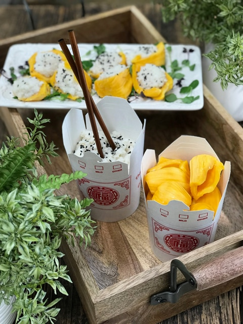

Coconut Jicama Rice stuffed Jackfruit Pods
 One of the pleasures of home cooking is discovering that favorite, longed-for foods are not so out of reach, after all… even if they need to be sugar-free, raw, grain-free, and dairy-free. We live in a vast world of culinary ingredients… it’s time to start using them to our advantage.
One of the pleasures of home cooking is discovering that favorite, longed-for foods are not so out of reach, after all… even if they need to be sugar-free, raw, grain-free, and dairy-free. We live in a vast world of culinary ingredients… it’s time to start using them to our advantage.
My Inspiration
I was beyond thrilled after pulling this dish together. My inspiration was coconut rice, which is a dish prepared with glutinous rice, coconut milk, sugar, salt, and water. I remember enjoying it as a side dish to the curry soup that I would order at a Thai restaurant.
Rice Substitute
Instead of using rice, I choose the mightly jicama (pronounced hee-cama). It is very similar in texture to a turnip with a taste closer to an apple. As odd as it may sound, it is juicy yet dry, so it “rices” really well, making an excellent replacement for white rice.
Motor on Over to Grocery Store
Once you arrive at the grocery store to gather up the ingredients needed for this recipe, look for jicama that is firm and void of blemishes. Often they can be REALLY big; don’t be afraid to ask the produce caretaker to cut it in half for you. You can purchase them ahead of time, keeping them for up to four weeks, and in the refrigerator when cut. But don’t hang on to them much longer, or the starch will convert to sugar.
If you are lucky enough to have a nearby grocery store that carries jackfruit, you can always ask the produce assistant if they would be willing to cut a two-inch slab for you. I recommend doing this, especially if you are new to working with this fruit. When I bought mine, I asked them to do that very thing because the only one that they had was bigger than my head with an 80’s hairdo.
Exciting Read on Jackfruit
A little over a week ago, I started researching how and where jackfruit is grown. I wanted to learn as much as I could before diving into this sweet treasure. Please click (here) to learn more. It is worth the read. One of the tips that I walked away with was to make sure to coat my hands and cutting knife with coconut oil so the naturally occurring latex within the fruit wouldn’t stick to everything. I hear that it is a real bugger to get off. I am happy to report that it worked beautifully, so don’t skip this step. Well, let’s tie that apron on and get busy in the kitchen. I hope you enjoy this simple yet delicious recipe. Please leave a comment below. blessings, amie sue

Ingredients
- 4 cups (465 g) jackfruit flesh
- 4 cups (828 g) diced, peeled, jicama
- 2 cups (382 g) thick coconut milk
- 2 Tbs (30 g) Lakanto Monkfruit Sweetener (powdered)
- 1/2 tsp (1 g) pink Himalayan salt
Preparation
Jackfruit Pods
- When removing the pods from the jackfruit, be gentle to keep them intact so you can stuff them with the coconut “rice.” Once done, set them aside.
Coconut Jicama Rice
- Peel and dice the jicama into small-medium chunks.
- Keep the jicama pieces reasonably uniform in size, so they break down evenly.
- Fit the food processor bowl with the “S” blade and place the jicama inside.
- Pulse roughly 7-10 times. The end goal is to create rice-sized pieces. Pour into a medium-sized bowl.
- In the blender, combine the coconut milk, sweetener, and salt. Blend until creamy.
- You can use fresh young Thia coconut meat, blended into a thick creamy consistency, or you can use canned organic, full-fat coconut milk.
- If you use canned, chill the can overnight to thicken the coconut milk. Use the whole can.
- Pour the coconut cream over the jicama rice and mix well.
Assembly
- Place a scoop of jicama rice into each pod and arrange it on a plate.
- Garnish with microgreens and sprinkle black sesame seeds on top, Enjoy!
© AmieSue.com